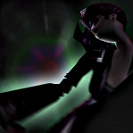

| About
Welcome to my World of Warcraft wallpapers gallery! The first part of the gallery features panoramas from in-game scenes.
The second half contains screenshots. Hovering over the names of the images brings up more information.
All panoramas are offered in 2 resolutions: full size and 2560x1440 (8:5 aspect, may be cropped). Starting with the games release in February 2005 I played an undead mage named Storke on the German server Lothar. I was part of the fraction-leading raid guild MC1 and later founder and guild leader of Evolution until I quit playing in the summer of 2007. The YAR guild was the last known decendent. My interest in taking these in-game photos developed alongside my fascination to play the game. A big inspiration at the time were nebdaar's panoramas. I started to get more involved with panoramas and picture manipulation. This is how this gallery developed. | Download
To batch download all images, save the following links:
| Licensing
I am the original author of all images provided in this gallery.
I did assemble them here for you to enjoy with much love and care. Feel free to share them, but please credit me by linking to this website.
I license them under the Creative Commons Attribution-ShareAlike 3.0.
| Honors
This site has been honored by
Vaneck and Gnorog
on the 2006-03-10 german community watch and by
Drysc
on the 2008-04-02 US community spotlight. These set the start for the
gallery being widely known and referred to on many, many other sites. There have been many encouraging voices among all sorts of people. This would be too much to list here. Thank you all for your kind support! | Acknowledgments
Special thanks to
Astaroth
for hosting support of my first gallery,
Arji
for just being lovely,
Volvox
for being crazy - keep it real!,
Mournblade
for being the best guild grandpa ever!, and
Artemisia
for granting me access to her account so that I could made the last wallpapers! I'd also like to thank
Phage,
Tuwonga,
Vexation,
Tarabrax,
Axute,
Massel and
Fyor
and many more for being such great models! :) | Contact
m@mgrf.de |
{kind=link}
{kind=link}
{kind=link}
{kind=link}
{kind=link}
{kind=link}
{kind=link}
{kind=link}
{kind=link}
{kind=link}
{kind=link}
{kind=link}
{kind=link}
{kind=link}